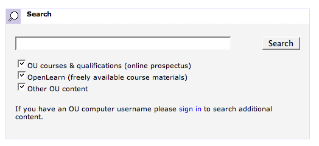
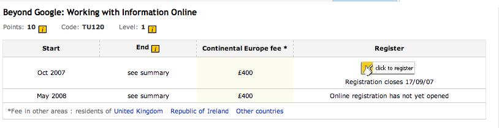
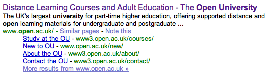

As part of the OU's ongoing federated search project, a query just came round asking for thoughts about including results from a third party web search engine as one of the results options. Presumably this would mean adding additional options to the current interface.
For example, another option here:

and another results tab here, maybe?
In fact, (quick aside!), just look at those results a little more closely...
See these?
Customised pages with an additional pricing info column for particular territories: CO1i - Ireland; CO1w - Other Countries; CO1e - Continental Europe:

(I'm not sure what the significance of CO1 and CO2 is? Maybe next and next but one presentation when they are less than 6 months or so apart? I donlt know.... CO2 works with the territory switches, though, so I could have listed far more results....)
Anyway, anyway - who gives a !$%&! about those duplicate entries? Why use those results items/screen real estate in such a wasteful way?! Aaargggghhh...
Here's one way that multiple hits for the same course might be addressed - sublinks for the different territories off a primary hit:

Okay - back to the preamble to the point of the post...
If results from a third party search engine were to be included as a results listing in this way, what criteria would be used to choose the provider? There are obviously opportunities for a commercial partnership... or would this bring a potential bias into the provision of web search results?
(There's a corollary, too, maybe?, in the area of the library's own federated academic search tool, too - should Google Scholar and Wndows Live Academic be included in the listings? Or is that different.....?! ;-)
Technically, there is the issue of how the results are actually pulled in and displayed - via an API, presumably, which would be okay if all the players offered a SOAP or XML returning RESTful API... (And would branding from the search engine have to be displayed to comply API T&C? If so, how prominently?)
The matter of sponsored/paid for links is another issue, depending on which search engine is used to provide web search results. Would these have a place in an OU published page? Or maybe there's an opportunity to get a bit of revenue in... dangerous territory, methinks...
My immediate thought was that a custom search engine might be the way to go, e.g. using something like Google Custom Search Engine for a quick'n'dirty proof of concept.
This could be domain limited over all the outlinks from OU course materials and research papers for example, or even just by extracting *all* linked to domains from *all* the docs on the .open.ac.uk domain, and then using these to seed the custom search engine?
(Memories of Social ROUTES spring to mind here, as well as Making the Most of Links from Online Course Materials to External Websites.)
In fact, the more I think about it, the more I like the idea of developing an OU custom search engine. If nothing else, it would allow us to make a claim about leading the way in enterprise powered, social search engines and maybe get a bit of press out of it?! ;-)
It could also be built up from 'satellite' course-powered search engines.
We could maybe even get a partnership project going with one of the big search co's?
For example, if the Google search appliances can scrape links from an internal network and then feed these directly into a Google custom search engine, you have a really quick way of generating a custom web search engine.
Yes - there are dangers that you isolate yourself from those bits of the web you don't link to from your site, but that could be addressed in part by adding the domains that link in to your site as additional custom search limits?
And for the full web search experience, you could just use Google Google anyway... (but even there, Google ground truth can be optionally personalised away...).
Posted by ajh59 at April 19, 2007 01:04 PMI hate to be negative, but is there really any point in including results from a mainstream search engine? If I want to search the web, I'm going to Google [other search engines are available] and search there. And let's say OU includes Google searches - do you have the 'UK only' option, which I use at least half the time? Or does that display a bias towards UK-based students? All you'll end up with is clutter.
I find that the current system very unfriendly, and in some cases useless. The display of the same page repeatedly doesn't help, but the algorithm used seems utterly bizarre. Try a search for 'accessibility'. This is a word that appears on pretty much every OU page, but I would expect the main Accessibility information page to be top, or at least close. I'd also expect the Openlearn course materials about accessiblity to be up there. Indeed the equivalent Google search (limiting to site:open.ac.uk) puts these at numbers one and two. After going through the first 70 OU results I've given up. Even limiting myself to OpenLearn materials the relevant unit comes in at 15. My assumption is that there's too much bias towards pages that are either have lots of links to them and/or are most frequently visited.
Much more useful would be a search of OU-subscribed databases (assuming you're logged in as staff/student) via a ZPORTAL type system.
Just my opinion :-)
ps I tried to include links where relevant, but can't. You'll just have to Google them ;-)
Posted by: Richard at April 19, 2007 04:20 PMIf I was to agree with the previous comment, it might appear that I am bitter and twisted about not getting to see or comment on 'private betas' of these systems before they are released...
...not that there's any reason I should - I'm not 'supposed' to do any of the stuff that appears in OUseful.info...
Re: that comment, though - I couldn't possibly comment... ;-)
In passing, you may fancy commenting on the design notes for a revised design of the OU site that Guy Carberry has just posted at http://conclave.open.ac.uk/guycarberry/?p=161